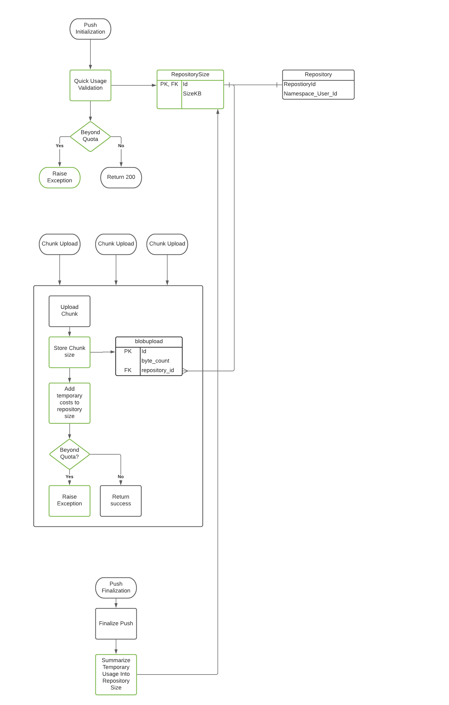
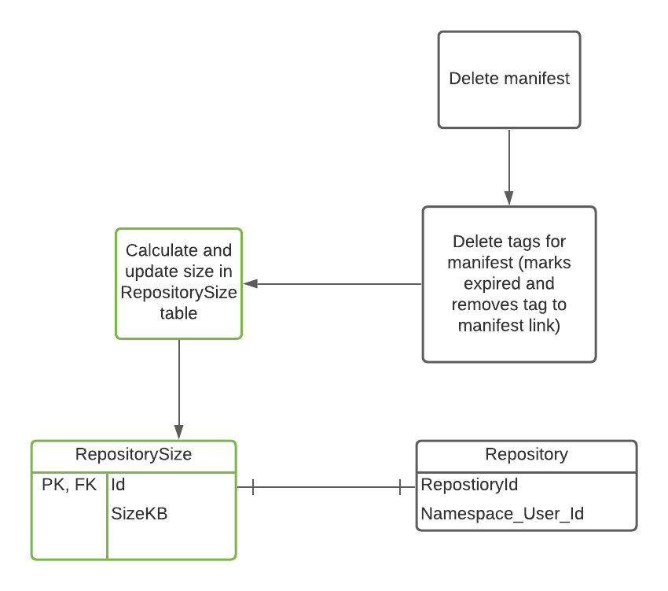
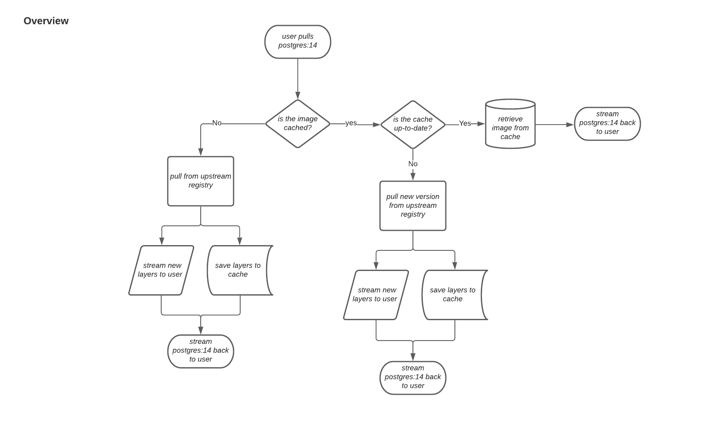
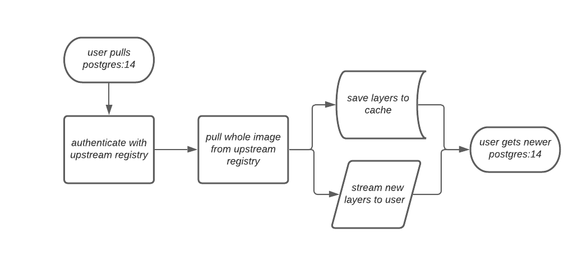
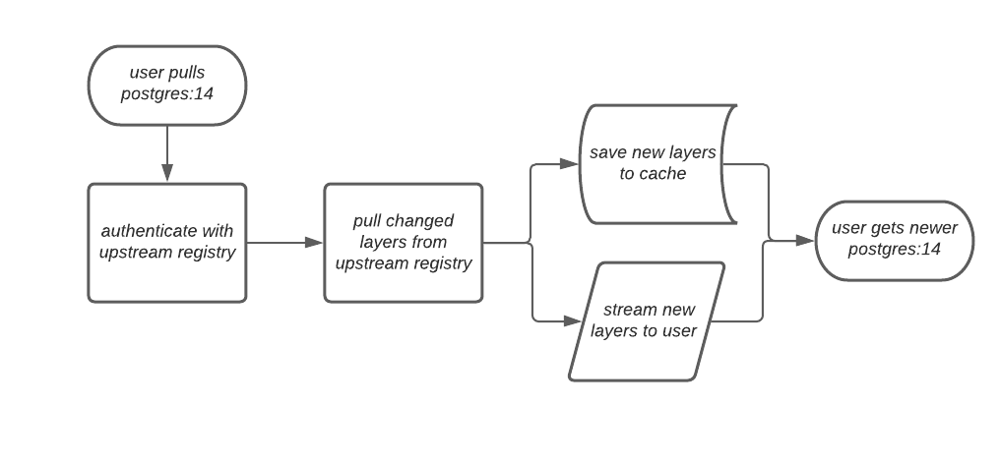

Early access documentation for Red Hat Quay 3.7.0
Red Hat Quay Early Access Documentation
Abstract
Chapter 1. Red Hat Quay Release Notes
Red Hat Quay is regularly released, containing new features, bug fixes, and software updates. We highly recommend deploying the latest version of Red Hat Quay.
For Red Hat Quay documentation, you should know that:
- Documentation is versioned along with each major release
- The latest Red Hat Quay documentation is available from the Red Hat Quay Documentation page
- Prior to version 2.9.2, the product was referred to as Quay Enterprise
Red Hat Quay, version 3 is the latest major version.
1.1. Version 3.7.0
1.1.1. quay / clair / quay-builder
Added/Changed:
Fixed:
1.1.2. quay-operator
Added/Changed:
Fixed:
1.1.3. Red Hat Quay feature tracker
New features have been added to Red Hat Quay, some of which are currently in Technology Preview. Technology Preview features are experimental features and are not intended for production use.
Some features available in previously releases have been deprecated or remove. Deprecated functionality is still included in Red Hat Quay, but is planned for removal in a future release and is not recommended for new deployments. For the most recent list of major functionality deprecated and remove with Red Hat Quay 3.7, refer to the table below. Additional details for more fine-grained functionality that has been deprecated and removed are listed after the table.
Table 1.1. Technology Preview tracker
| Feature | Quay 3.7 |
|---|
1.1.3.1. Deprecated features
1.1.3.2. Technology preview features
Chapter 2. Quota management
2.1. Red Hat Quay quota management and enforcement
With Red Hat Quay 3.7, users have the ability to report storage consumption and contain registry growth by establishing configured storage quota limits. Although there are no limitations on a Quay organization’s storage consumption, on-premises Quay customers subjected to capacity limits of their environment are now equipped with the following capabilities:
- Quota reporting. With this feature, a super admin can track the storage consumption of all their organizations. Additionally, users can track the storage consumption of their assigned organization.
- Quota management. With this feature, a superuser can define soft and hard checks for Red Hat Quay users. Soft checks tell users if the storage consumption of an organization reaches their configured threshold. Hard checks prevent users from pushing to the registry when storage consumption reaches the configured limit.
Together, these features allow service owners of a Quay registry to define service level agreements and support a healthy budget.
2.1.1. Quota management architecture

The preceding image shows the expected design flow and architecture of the Quota management feature.
With Red Hat Quay 3.7, boxes outlined in black show the current flow, and boxes outlined in green show what need to be implemented to support this feature.
Architecturally, the RepositorySize table holds the storage consumption, in bytes, of a Red Hat Quay repository within an organization. The sum of all repository sizes for an organization defines the current storage size of a Red Hat Quay organization. When an image push is initialized, the user’s organization storage is validated to check if it is beyond the configured quota limits. If an image push exceeds defined quota limitations, a soft or hard check occurs. For a soft check, users are notified, and for a hard check, the push is stopped. If storage consumption is within configured quota limits, the push happens as expected.
Image manifest deletion follows a similar flow, wherein the link between associated image tags and the manfiest are deleted. Additionally, after the image manifest is deleted, the repository size is recalculated and updated in the RepositorySize table. The image below represents the design flow and architecture when deleting an image manifest:

2.1.2. Quota management limitations
Quota management helps organizations maintain resource consumption, however there are a few limitations. For example, calculating resource consumption on push, as opposed to monitoring consumption with a background worker, does not take into account the usage data of existing images. To avoid potential issues, a backfill for all existing repositories is required before the feature is enabled. Additionally, calculation becomes part of a push’s critical path, otherwise the usage data could drift.
2.1.3. Establishing quota in Red Hat Quay
The following procedure describes how you can report storage consumption and establish storage quota limits.
Prerequisites
- A valid Red Hat Quay repository.
- A superuser administrator.
- Enough storage to meet the demands of quota limitations.
Procedure
- Log in to your organization’s repository as a superuser.
- On the Users and Organizations panel, click the name of the repository you want to define storage quota limits for.
Click Organization Settings on the left hand pane.
NoteAlternatively, you can establish quota management by clicking Manage Organizations on the left hand pane, and then clicking Settings → Configure Quota.
- Set the organization quota to the desired amount in the Quota Management section, for example, 10 GB.
- Set the percentage at which users will be warned when the organization reaches their defined threshold. For example, setting Warning to 60 is equivalent to 60%.
- Set the percentage at which pushes are rejected from the organization. For example, setting Rejected to 99 is equivalent to 99%.
- Click Save Quota Details
You can check the remaining storage on the Repositories page of your organization.
Chapter 3. Red Hat Quay as cache proxy
3.1. Red Hat Quay as a proxy cache for upstream registries
With the growing popularity of container development, customers increasingly rely on container images from upstream registries like Docker or Google Cloud Platform to get services up and running. Today, registries have rate limitations and throttling on the number of times users can pull from these registries.
With this feature, Red Hat Quay will act as a proxy cache to circumvent pull-rate limitations from upstream registries. Adding a cache feature also accelerates pull performance, because images are pulled from the cache rather than upstream dependencies. Cached images are only updated when the upstream image digest differs from the cached image, reducing rate limitations and potential throttling.
With Red Hat Quay acting as a cache proxy for upstream registries, the following features are available:
- Configuration of a Quay repository that acts as a cache for a specific upstream registry. This repository can be defined by the Quay config.yaml or the Quay UI.
- Leveraging of an organization’s storage quota to limit cache size.
- Cache and image streams transparency to client. Images in the proxy cache act similar to other images on Quay, and default behaviors such as security scanner, time machine, etc. are supported.
- Audit log that tracks all cache pulls.
- Cache dump to eliminate storage consumption.
- Robot account creation with Role Based Access Control (RBAC) management.
- Metrics to track cache activity and efficiency, for example, hit rate, size, and evictions.
3.1.1. Proxy cache architecture
The following image shows the expected design flow and architecture of the proxy cache feature.

When a user pulls an image, for example, postgres:14, from an upstream repository on Red Hat Quay, the repository checks to see if an image is present. If the image does not exist, a fresh pull is initiated. After being pulled, the image layers are saved to cache and server to the user in parallel. The following image depicts an architectural overview of this scenario:

If the image in the cache exists, users can rely on Quay’s cache to stay up-to-date with the upstream source so that newer images from the cache are automatically pulled. This happens when tags of the original image have been overwritten in the upstream registry. The following image depicts an architectural overview of what happens when the upstream image and cached version of the image are different:

If the upstream image and cached version are the same, no layers are pulled and the cached image is delivered to the user.
In some cases, users initiate pulls when the upstream registry is down. If this happens with the configured staleness period, the image stored in cache is delivered. If the pull happens after the configured staleness period, the error is propagated to the user. The following image depicts an architectural overview when a pull happens after the configured staleness period:
image: cache-proxy-staleness-pull.png[Staleness pull overview]
Quay administrators can leverage the configurable size limit of an organization to limit cache size so that backend storage consumption remains predictable. This is achieved by discarding images from the cache according to the frequency in which an image is used. The following image depicts an architectural overview of this scenario:
3.1.2. Proxy cache limitations
Proxy caching with Red Hat Quay has the following limitations:
- Your proxy cache must have a size limit of greater than, or equal to, the image you want to cache. For example, if your proxy cache organization has a maximum size of 500 MB, and the image a user wants to pull is 700 MB, the image will be cached and will overflow beyond the configured limit.
- Cached images must have the same properties that images on a Quay repository must have.
Chapter 4. Build Enhancements
4.1. Red Hat Quay build enhancements
Prior to Red Hat Quay 3.7, Quay ran podman commands in virtual machines launched by pods. Running builds on virtual platforms requires enabling nested virtualization, which is not featured in Red Hat Enterprise Linux or OpenShift Container Platform. As a result, builds had to run on bare-metal clusters, which is an inefficient use of resources.
With Red Hat Quay 3.7., the bare-metal constraint required to run builds has been removed by adding an additional build option which does not contain the virtual machine layer. As a result, builds can be run on virtualized platforms. Backwards compatibility to run previous build configurations are also available.
4.1.1. Red Hat Quay enhanced build architecture
The preceding image shows the expected design flow and architecture of the enhanced build features:
With this enhancement, the build manager first creates the Job Object. Then, the Job Object then creates a pod using the quay-builder-image. The quay-builder-image will contain the quay-builder binary and the Podman service. The created pod runs as unprivileged. The quay-builder binary then builds the image while communicating status and retrieving build information from the Build Manager.
4.1.2. Red Hat Quay build limitations
Running builds in Red Hat Quay in an unprivileged context might cause some commands that were working under the previous build strategy to fail. Attempts to change the build strategy could potentially cause performance issues and reliability with the build.
Running builds direclty in a container will not have the same isolation as using virtual machines. Changing the build environment might also caused builds that were previously working to fail.